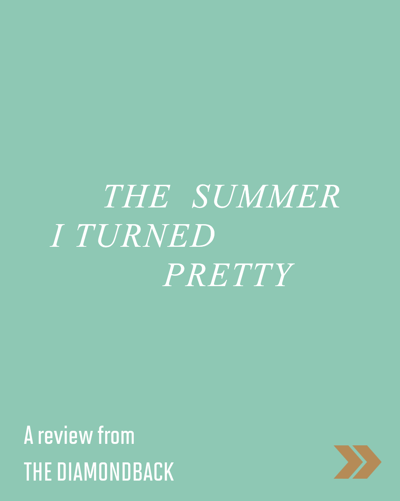
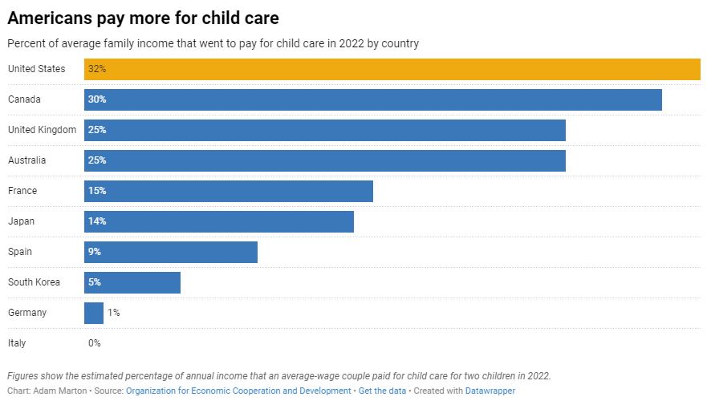
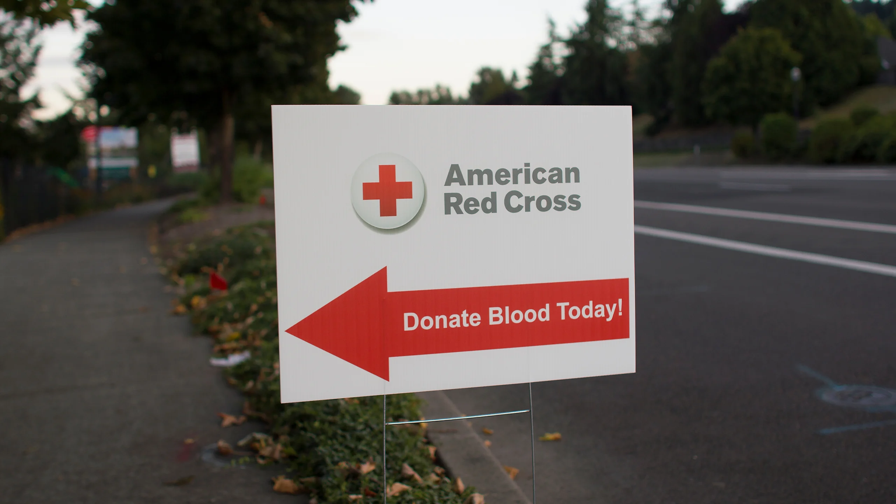
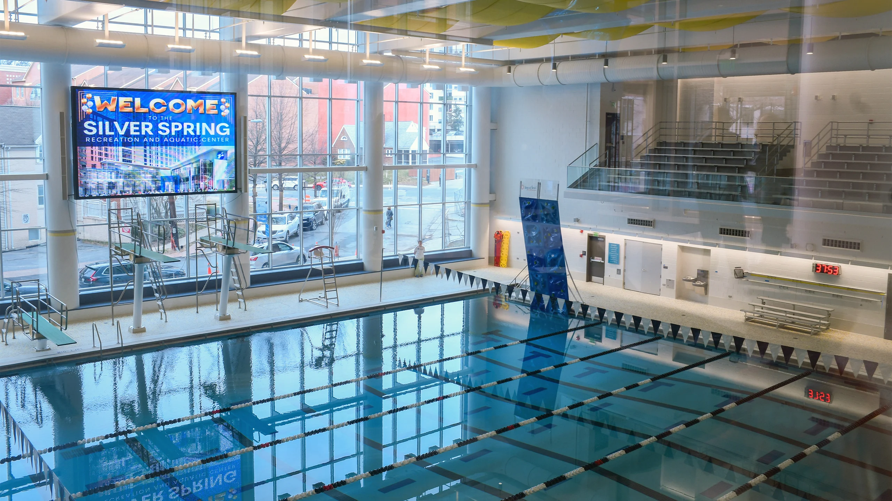

Capital News Service · Instagram Reel
Clips
Social Media

Sun Herald · Instagram Reel
Tips to protest safely in Mississippi
The Diamondback · Instagram Reel
Shore Thing hopes to revive College Park’s live music scene
The Diamondback · TikTok
What are people at UMD drinking this fall?
Capital News Service · Reddit
How one Maryland school district turned around student behavior with ‘restorative practices’

The Diamondback · Instagram post
What are Terps listening to this fall?
The State · Instagram post
How can South Carolina Democrats turn visits from potential 2028 hopefuls into 2026 success?

The Diamondback · Instagram post
'The Summer I Turned Pretty' review
The Sun News · Instagram post
Where to eat Lowcountry faves in Myrtle Beach
Reporting

Capital News Service ·
College students move across state lines — and lose access to therapy as a result

Capital News Service ·
On child care, a fitful search for local solutions to a national problem
Source of the Spring ·
Bump ’n Grind Launches Investment Campaign to Fund a Renovated Community Hub

Source of the Spring ·
‘Our Job Is to Build a Bridge’: How the Red Cross Serves the Community
Source of the Spring ·
Rowing Trio Will Journey Across the Pacific Ocean to Promote Inclusivity and Equality
Source of the Spring ·
Third Hill Brewing Co. Continues Traditions While Beginning New Ones

Source of the Spring ·
Silver Spring Recreation and Aquatic Center Opens to Serve the Community

Source of the Spring ·